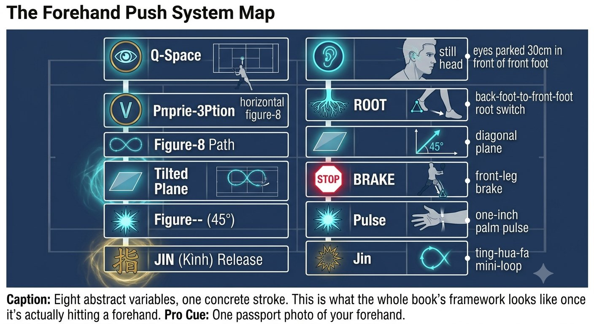
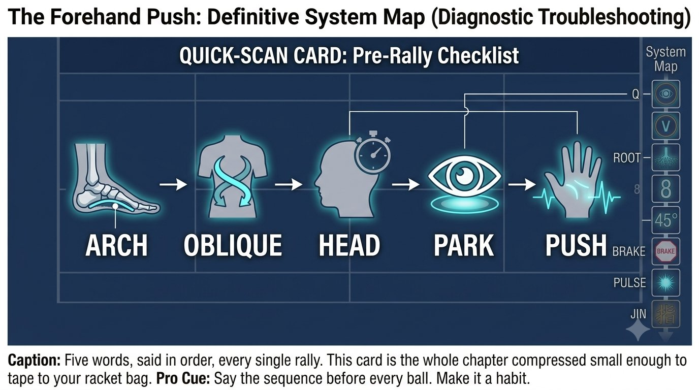

Chapter 19: Forehand Push System
(English version of Chapter 19 in the United Tennis Handbook)
CHAPTER 19

Figure 1
FOREHAND PUSH SYSTEM
Complete Breakdown
Every element from Q-V-ROOT-8-45-Impulse-Jin, integrated into a single stroke: the forehand push.
The forehand isn't a swing. It's a push from behind the racket. The body pushes the hand, and the hand pushes the racket.
— Henry Pham
The Forehand Push System Map
The push system is simply the forehand's embodiment of the entire Q-V-ROOT-8-45-Impulse-Jin stack.
Figure 19.1: Eight abstract variables, one concrete stroke. This is what the whole book's framework looks like once it's actually hitting a forehand.

Figure 2
Load Phase: As the Ball Leaves the Opponent
– Eyes: soft tracking on the ball, head moving, VOR on.
– Feet: the back foot (right foot for a right-hander) grips on its inside edge. You should feel the arch lift.
– Hips: turning, with a stretch felt across the belly from the back hip to the front ribs — this is the spiral line loading.
– Racket: the takeback is chest-led, never arm-led. The elbow stays in front of the body line, the wrist stays loose, and the butt cap points toward the side fence.
Park Phase: at the Bounce
– Head: stops. Dead still in space. Vestibular quiet — this is VOR quiet.
– Eyes: jump ahead to the contact zone — 30 to 45cm in front of the front foot, waist height. Lock. Say "park."
– Body: the knees bend to bring the contact zone up to the waist, rather than the hands dropping down to the ball. This keeps the fascial line long.
– Proprioception check: without looking at the racket, can you feel the palm facing the side fence behind the racket? If yes, you're loaded.
Execution: the Forward Swing
– Fascial recoil: the chest fires first and pulls the arm. You feel the sequence oblique, then chest, then palm — the arm is just a rope.
– Feel: the heel of the palm pushes through 12 inches of the ball. Not up, not across — through. A push.
– Tension: 3/10, up to 6/10 at contact for 30 milliseconds, back down to 3/10. The forearm never tightens.
– Face: a semi-western grip closes the face slightly, which is correct for the inside position — never correct it with the wrist.
– Brake: the front leg straightens and stomps, the front hip hits a wall. The obliques fire to stop the torso's rotation abruptly.
– Snap: because the torso stopped, the arm and racket whip through. The palm-push feeling becomes a pulse — one inch of penetrating push, not a long follow-through.
Coach's Note
Feel a bicep burn or an elbow sting and you broke the line at the shoulder — a muscled push. Reset: screw the back foot in, and let the chest push the hand.
Hold Phase: After Contact
– Eyes and head: stay parked on the contact spot. You should hear the ball hit before you see where it goes. Count "through."
– Balance: the front foot's inside arch should still carry pressure. Fall backward and you pulled with the arm instead of pushing with the spiral line.
Figure 19.2: Four frames, one push. If you can find your own body in each of these four positions, you have the entire chapter without reading another word.

Figure 3
Fault Signals: What Went Wrong
Figure 19.3: Six symptoms, six one-line fixes. Most forehand problems trace back to just one broken link in this book's chain — this card tells you which one.

Figure 4
Pre-Point Reset: Five Seconds
1. Feet to ground: barely lift the toes, press into the tripod (big toe, little toe, heel). Feel the inside arch engage.
2. Head to level: chin slightly tucked, eyes level. One slow head turn left and right. Feel the vestibular system settle.
3. Hands to 3/10: squeeze the racket to 8/10, then drop to 3/10. Wiggle the fingers. Keep the forearm soft.
The Forehand Push Quick-Scan Card
Say it in order before every rally:
Figure 19.4: Five words, said in order, every single rally. This card is the whole chapter compressed small enough to tape to your racket bag.
ARCH → OBLIQUE → HEAD → PARK → PUSH
The Principle
The forehand push isn't a swing. It's a ground-up chain: root, then V, then Q, then the 8, then 45 degrees, then the brake, then the pulse. When it works, you feel a stretch from foot to palm, then a release — the palm pushes through the ball while the eyes stay parked.
The Forehand Push Checklist
FEET SCREW. HEAD STILL. EYES PARK. SMALL 8 ON 45°. BRAKE. PULSE.
– Pre-point: feet in tripod, head level, hands at 3/10.
– Load: the back foot screws in, the oblique stretches, the chest opens, the wrist stays loose.
– Park: the head stops, the eyes jump to the contact zone 30cm in front, say "park."
– Execute: the chest fires first, the palm pushes through 12 inches, the front leg brakes.
– Hold: the eyes and head stay parked until the ball crosses the net.
– If the bicep burns or the elbow stings, the line broke at the shoulder — the shot got muscled.
Where This Leads
This chapter integrates Q-V-ROOT-8-45-Impulse-Jin into the forehand push system. Chapter 20 covers the one-handed backhand saber. Chapter 21 covers the two-handed backhand hybrid.